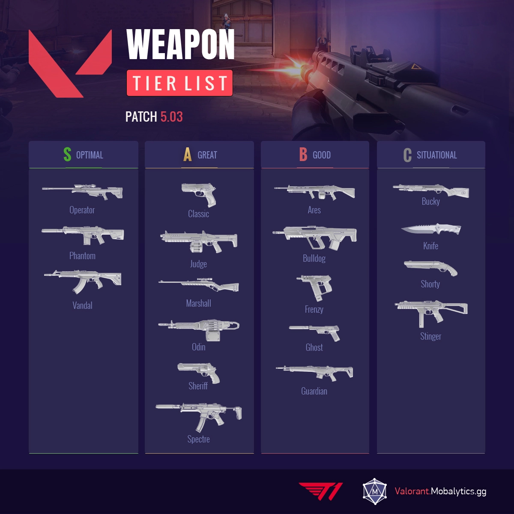

Agents have different variations of weapons, typically firearms, to cater to specific playstyles or metas. Weapons are separated by two categories, Sidearms and Primary weapons. Sidearms consists of pistols, whilst primaries include SMGs, shotguns, rifles, sniper rifles, and machine guns.Guns have limited amounts of ammo but come with reserve magazines. Bullets deal different amounts of damage depending on the gun, the body part they hit, and the distance between the shooter and the target. Guns are also affected by accuracy spreads. Most guns' first shot will have a spread value, meaning there is a possibility the shot fired will not make a perfect hit at the target under the player's crosshair. The higher the spread value, the more likely the shot will deviate from the crosshair. The only guns with with no spread for their first shot are the Guardian, Marshal, and Operator, and this only applies for the weapon's ADS or scoped mode.
